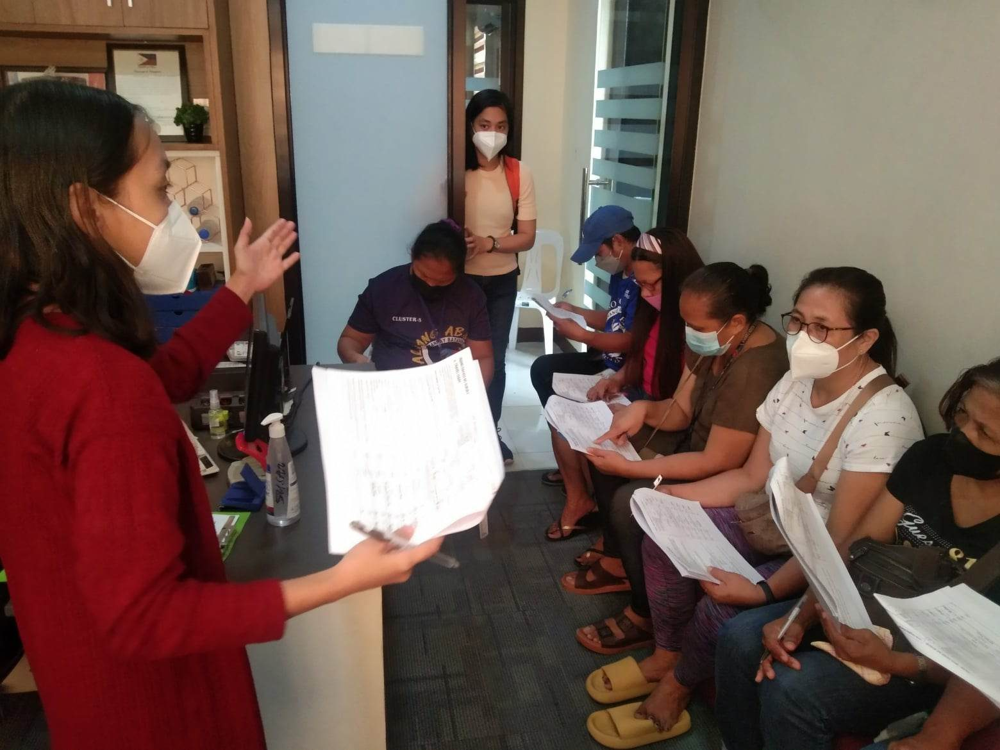
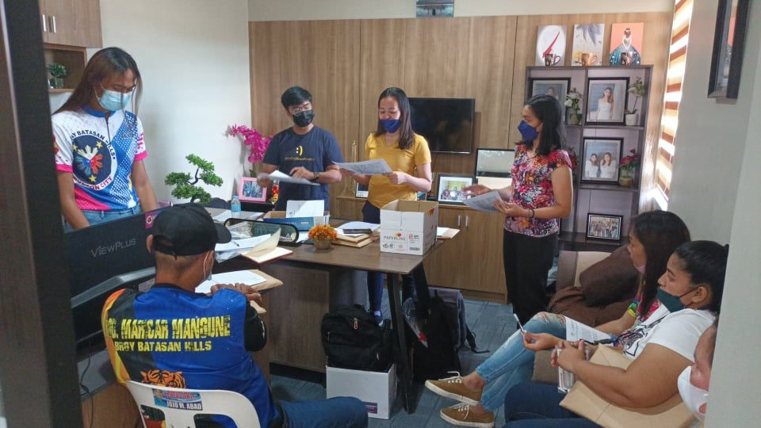
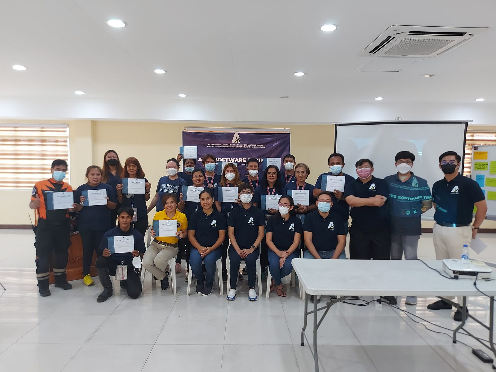
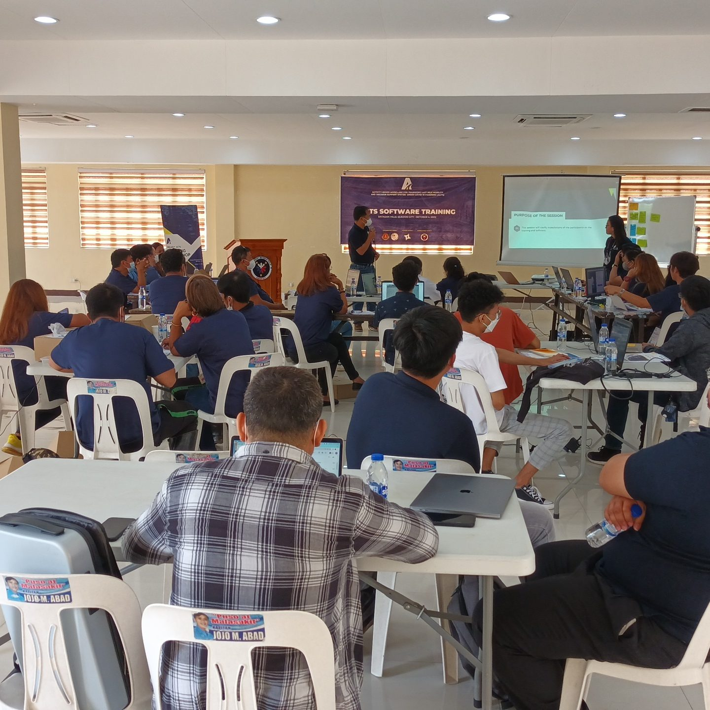

Model how a city moves.
Project ACTS turns a coded travel survey into a chain of discrete-choice models — then simulates agents, desire lines, and route heatmaps on an interactive map. A decision-support system for activity-based travel-demand modeling.
Free & open source · Bundled sample dataset: Quezon City, Philippines
Built for travel-demand analysis
A microscopic, activity-based simulation of urban travel behavior — everything the modeling workflow needs in one desktop app.
Frequent destinations
Reveals the places and destinations agents travel to most across the network.
Mode choice
Identifies which modes of transport people choose under different scenarios and constraints.
Significant factors
Surfaces the socio-economic and travel factors that most affect individual behavior.
Activity-travel & OD
Simulates each individual's activity-travel and produces their origin–destination matrix.
Route heatmaps
Shows where trips concentrate on the road network with routed, weighted heat.
Desire lines
Draws origin–destination demand straight from your survey and OD matrix.
From survey to simulation
Upload your coded survey, OD matrix, and choice sets — then watch the models run and the city come to life on the map.
Models fit locally on your CPU in about 20 seconds — no account, and your survey data never leaves your machine.


Grounded in real fieldwork
From March 21 to April 10, 2022, the ACTS team ran a face-to-face survey across all nine clusters of Barangay Batasan Hills, Quezon City. Eight local enumerators were hired and trained to interview household heads whose activities take them outside the home — to work, to market, for leisure — traveling by tricycle, jeepney, private car, and more.
A 3% per-cluster sample (oversampled to 10% in Cluster 4, where CCTV footage was available for validation) set a target of 884 respondents. By June 30 the team had surveyed 958 — over 100% of target.


Built to be handed over
Beyond building the model, ACTS was made to be used by the people who plan cities. The project developed training modules and ran the ACTS Software Training for local-government units in Batasan Hills.
Participants were walked through uploading survey data, running the four models, and reading the outputs — descriptive statistics, correlation matrices, parameter estimates, and simulation maps — and awarded certificates on completion.
A decision-support system for last-mile mobility
Modeling activity-travel behavior to help local governments plan for movement, economic activity, and resilience.
DOST-PCIEERD
Philippine Council for Industry, Energy, and Emerging Technology Research and Development — fully funds Project ACTS.
UPLB-DCE
University of the Philippines Los Baños — Department of Civil Engineering leads the research and development.
Brgy. Batasan Hills
Quezon City — the cooperating barangay where the survey and software training were carried out.
Objectives
- Support decisions on the movement of people and the impact of management strategies.
- Integrate existing databases into the LGU system.
- Develop training modules and train LGU users.
- Disseminate outputs through journal publications.
Potential impact
- Identify specific transport and economic activities.
- Locate commerce hubs and areas of concern.
- Forecast and visualize proposed management schemes.
- Link authorities and communities in solving mobility problems.
Download Project ACTS.
Free. Runs on Windows. Ships with the Quezon City sample dataset.
The installer is unsigned — Windows SmartScreen may warn on first run (More info → Run anyway).